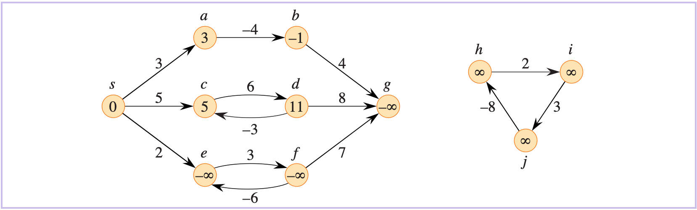

基本理论
基本问题：求源点到其它所有点的最短距离。
注意
很多实际问题都可以建模为“最短路问题”，边上的权重可以代表非距离的其它信息，如时间、成本、罚款、损失，或者任何可以随路径长度的增加而线性积累的信息。
基本性质¶
最优子结构¶
最短路问题具有“最优子结构”：最短路径的子路径也是最短路径。
证明
已知路径 \(p=\langle v_0,v_k\rangle\) 是从 \(v_0\) 到 \(v_k\) 的最短路径，将其分解为 \(v_0\stackrel{p_{0i}}{\rightsquigarrow} v_i \stackrel{p_{ij}}{\rightsquigarrow} v_j \stackrel{p_{jk}}{\rightsquigarrow} v_k\)。设存在另一条从 \(v_i\) 到 \(v_j\) 的路径 \(p_{ij}'\) 满足 \(w(p_{ij}')<w(p_{ij})\)，则 \(v_0\stackrel{p_{0i}}{\rightsquigarrow} v_i \stackrel{p_{ij}'}{\rightsquigarrow} v_j \stackrel{p_{jk}}{\rightsquigarrow} v_k\) 总代价会更小，这与 “\(p\) 是最短路径”矛盾！因此 \(p_{ij}\) 就是从 \(i\) 到 \(j\) 的最短路径。
关于回路¶
- 若结点 \(t\) 处在一个负权回路上、或 \(s\) 和 \(t\) 之间存在负权回路，则 \(s\) 与 \(t\) 之间不存在最短路。
- 若 \(t\) 不处在负权回路上且 \(s\) 和 \(t\) 之间不存在负权回路，则负权边并不影响最短路的求解。
- 若点 \(p\) 到源点的最短距离为\(-\infty\)，则 \(p\) 所可达的点到源点的距离都是 \(-\infty\)。
例子

各结点中的数字表示该结点到源点 \(s\) 的最短距离。结点 \(h,i,j\) 不可达，因此它们到 \(s\) 的最短距离为 \(+\infty\)，即使它们处在负权回路上。
- 最短路也不会包含权值为正的回路，因此含 \(|V|\) 个结点的图中的任意最短路至多有 \(|V|-1\) 条边（简单路径）。
最短路径树¶
若所有结点到源点 \(s\) 的最短路都已求出，则实际上形成的是一棵以 \(s\) 为根结点的树，树中结点到根结点的唯一路径就是图中该结点到源点的最短路径。
最短路径不一定是唯一的，因此“最短路径树”也不一定是唯一的。
“松弛”操作¶
对于每个结点 \(v\)，我们维护一个属性 \(\text{dist}\)，用来记录从源点 \(s\) 到结点 \(v\) 的最短路径权重。初始化时，除源点外，其余结点的 \(\text{dist}\) 值均初始化为 \(\infty\)。
当枚举到边 \(\langle u, v\rangle\) 时，即判断该边是否可以对当前记录的 \(s\) 到 \(v\) 的最短路径进行改善：将 \(\text{dist}[v]\) 与 \(\text{dist}[u]+w(u,v)\) 进行比较，如果前者更小，则更新 \(\text{dist}[v]\)、\(\text{pre}[v]\)。
形象上理解，就是尝试将路径 \(\langle s,v\rangle\) “松弛”为 \(\langle s,u\rangle+\langle u,v\rangle\) 。每次松弛操作实际上代表着：找到了距离更小的路径。\(\text{dist}[v]\) 的值只会不断递减变化，不断接近 \(\delta(s,v)\)。
令 \(\delta(u,v)\) 表示结点 \(u\) 到 \(v\) 的最短距离，则：
-
三角不等式：\(\forall \langle u,v\rangle\in E\)，\(\delta(s,v)\le\delta(s,u)+w(u,v)\)
-
下界性质：\(\forall v\in V\)，\(\text{dist}[v]\ge \delta(s,v)\)
一旦 \(\text{dist}[v]\) 的取值达到 \(\delta(s,v)\)，其值将不再发生变化。
-
收敛性质：对于某些结点 \(u, v\in V\), 如果 \(s\leadsto u\rightarrow v\) 是一条最短路径，并且在对边 \((u, v)\) 进行松弛前的某时间有 \(\text{dist}[u]=\delta(s, u)\)，则之后对该边进行的松弛操作有：\(\text{dist}[v] = \delta(s,v)\)，且之后 \(\text{dist}[v]\) 维持该结果不变。
即：若 \(s\leadsto u\rightarrow v\) 是最短路，则 \(u\) 找到最短路后，则 \(v\) 在对该边进行松弛后紧接着就可以找到最短路。
-
路径松弛性质：若 \(\langle s,v_1,...,v_k\rangle\) 是 \(s\) 到 \(v_k\) 的最短路，则按照顺序 \((s,v_1)\),\((v_1,v_2)\),...,\((v_{k-1},v_k)\) 依次对边进行松弛，最终一定满足：\(\text{dist}[v_k]=\delta(s,v_k)\)。
中间穿插对其它边的松弛操作对上述性质无影响。
常用算法¶
- 无权图： BFS
- 所有边权均为正
- 朴素的 Dijkstra 算法 --- 适合用于稠密图（邻接矩阵）
- 堆优化版的 Dijkstra 算法 --- 适用于稀疏图（邻接表）
- 存在某些边的权值为负
- Bellman-Ford 算法 --- 不超过 \(k\) 条边的最短路
- SPFA 算法